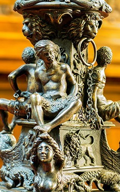

© Muzeul Național Peleș


 printați
printați
+40244 310 918 |
peles.ro@gmail.com |
Sclavii
Lumea artei italiene a cunoscut în secolul al XIX-lea un reviriment al stilurilor decorative anterioare. Operele marilor maeștrii din perioada Renașterii au fost aduse cu succes în actualitatea epocii istoriste.
Bogatul patrimoniu de care se bucură Castelul Peleș este compus din lucrări create în diverse epoci, din rândul cărora se distinge un număr restrâns de piese din bronz, din colecția de artă plastică a muzeului, realizate de sculptorul italian Giuseppe Michieli.
Talentatul artist venețian, Giuseppe Michieli, exponent de referință al lumii artelor majore italiene, s-a născut la cumpăna secolelor al XVIII-lea și al XIX-lea, în anul 1800. Creațiile sale au completat în mod fericit bogatul patrimoniu din peninsulă, faima sa depășind granițele patriei natale. Operele artistice semnate de Michieli au surprins iubitorii de frumos prin armonie și expresivitate. În lucrările sale se remarcă cu ușurință ineditul, îmbinat în mod echilibrat cu elemente inspirate după piese ale unor autori italieni din secolele al XV-lea și al XVI-lea. Urmând moda vremii, impusă în artele decorative la mijlocul secolului al XIX-lea, pe lângă creațiile originale, Michieli s-a rezumat uneori, doar la a realiza copii fidele ale unor lucrări din perioadele precedente, executate cu multă minuțiozitate. Succesul pe care l-a cunoscut pe parcursul îndelungatei sale activități – a trăit 100 de ani -, s-a datorat nu doar talentului înnăscut al maestrului, cît și muncii asidue de cercetare a operelor artiștilor conaționali din epocile anterioare. Preferința lui Michieli pentru lucrările semnate de Jacopo Sansovino (1486-1570) și de Niccolo Roccatagliata (activ 1590-1636) este evidentă în propriile sale realizări.
|  | Sculpturile copiate după Jacopo Sansovino, pe numele real Jacopo DʼAntonio Tatti (numele Sansovino l-a preluat dupa moartea maestrului său, Andrea Sansovino) au fost realizate la scară redusă, parte dintre ele fiind expuse în sălile Muzeului Național Peleș, precum Apolo și Mercur. Lucrările originale semnate de Sansovino se găsesc încă la Veneția. Din creațiile lui Roccatagliata, artistul venețian s-a inspirat pentru forma și decorarea bazelor triunghiulare ale sfeșnicelor și lampadarelor. Studiile aprofundate asupra operelor acestor artiști umaniști, l-au determinat pe Giuseppe Michieli să execute lucrări desăvârșite, caracterizate prin frumusețe si grație. |
Interesul remarcabil pe care îl acorda fiecărei creații artistice realizate, îmbinat cu talentul deosebit, l-au propulsat pe Giuseppe Michieli în tagma creatorilor consacrați ai epocii. După elaborarea schițelor preliminare, artistul venețian se implica în întregul proces de realizare a piesei. Munca perseverentă a artistului italian devine din ce în ce mai apreciată odată cu participarea la marile expoziții organizate în Italia, dar și în străinătate. La Expoziția Universală de la Paris, din anul 1867, Giuseppe Michieli participă cu candelabre, ilustrate în catalogul expoziției Art Journal, publicat la Londra., p.263
Anul 1881 avea să-i aducă trofeul mult dorit, care i-a încununat întreaga activitate artistică. La Expoziția de la Milano, Michieli primește medalia de aur, pentru realizarea unor copii în bronz, după Jacopo Sansovino.
Interesat de opera artistului italian, regele Carol I achiziționează pentru reședința sa de vară din Sinaia, două piese decorative deosebite, înalte de 140 cm, cu latura de 36 cm, care poartă semnătura lui Giuseppe Michieli. Piesele îmbogățesc decorația Scării de onoare ce face legătura dintre Intrarea oficială și Holul de onoare, fiind expuse de o parte și de alta a balustradei.
Cele trei picioare reduse în formă de gheare de grifon, ce susțin baza triunghiulară, cu laturile concave, decorate în registre suprapuse cu frunze de acant, volute vegetale și ove, amintesc de creațiile lui Niccolo Roccatagliata.
Corpul în formă de obelisc este format din segmente în retrageri succesive. Inferior trei sfincși cu cozile încolăcite încadrează trei cartușe dreptunghiulare, ornate în relief cu simboluri ale Veneției: leul din San Marco ținând o carte deschisă cu inscripție în limba latină, o pereche încarcerată și un personaj feminin drapat, alegorie a comerțului, șezând pe o casetă dreptunghiulară cu inscripție și datare (Venezia, 1866), având alături o ancoră. Pe capetele sfincșilor își sprijină picioarele trei personaje masculine, în ronde-bosse, parțial drapate, cu brațele înlănțuite. Protomele de lei care susțin anourile de fixare a lanturilor sunt așezate la baza segmentului superior compus din trei himere. Șase personaje masculine în ronde-bosse, dintre care numai trei drapate sunt surprinse în mișcare inversă acelor de ceasornic. Superior trei grifoni delimitează la partea inferioară segmentul format din trei putti. Discul circular susține balustrul cu sfera aurie, terminată cu simbolul Veneției, leul înaripat din San Marco care sprijină cu ghearele scutul cu inscripția ,,S. MARCO”.
Piesa decorativă realizată de Michieli din bronz patinat, în anul 1866, a fost, probabil, prototipul candelabrului cu care artistul venețian a participat la Expoziția Universală de la Paris din 1867. În catalogul evenimentului, Giuseppe Michieli este caracterizat de criticii de artă ai vremii ca fiind ,,un distins artist- manufacturier al Veneției”.